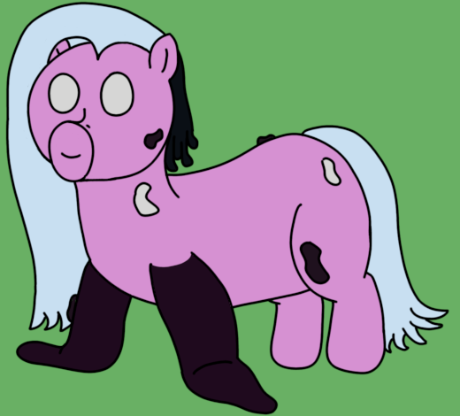

| Commonality | 37.4% (Reefs) |
| Durability | 3/10 |
| Strength | Physical: 3/10 Psionic: 2/10 Magical: 0/10 |
| Specials | Limited flight Rapid digestion and discharge of caloric energy |
| Personality | Particular and cuddly |
Aquarians are gangrenous Arrays, spawned explicitly for the purpose for the rapid digestion of feedstock, particularly those created by the Reefs that spawn them. They also excel at directed caloric management, allowing them to support other high-metabolism puppets. A group of Aquarians is called a commune or a trawl.
Arrays - Aquarians
Aquarians are somewhat lean and small given their size and purpose, standing at just 1' 6" (46cm). The changes to their bodies, while simple, are particularly obvious: Their front hooves are traded for a pair of gangrenous "flippers" that they can use to swim when near their host Reef, as well as their particularly oddly shaped snout. This snout houses a particularly muscular muzzle with a flexible lip, which the Aquarian uses to rapidly trawl loose soils for grass and other feed sources. Internally, Aquarians have very robust digestive systems, with multiple stomachs similar to ruminants. However, these stomachs are routed in parallel rather than in sequence, allowing an Aquarian to rapidly digest multiple payloads of feed at the same time.
Aquarians have a particularly strange set of traits, but their primary purpose is feeding. Their muscular muzzles are perfect for trawling soils, scraping large amounts of feed matter as the Aquarian lazily moves forward. This combines with the Aquarian's other major trait: They can modulate their own metabolism, up to a dozen times the normal amount. Combined with their ravenous capabilities, they can accrue a substantial amount of available caloric energy in short order.
When an Aquarian is full on energy, however, it needs a place to put it. This usually turns into feeding either its siblings, or in other cases, they will donate the extra energy to puppets who need a lot of caloric intake, such as Metastae. This allows the Aquarian to serve the role of caloric logisticians, and indeed, they have been seen adjusting their caloric intake when large energy sinks are active, such as firing Perditioners.
Whether eating or not, Aquarians prefer to at least be around their host Reefs, if not directly nestled in the outcrops and crannies where they are most well-protected. This cuddliness extends to their siblings and other nearby puppets, whom they often greet with calorically charged flippery hugs and nuzzles.
Aquarians don't actually have much in common with Arrays, surprisingly enough, which calls into question if they are truly related, or just a coincidental mirror. However, one dead giveaway against this theory is that Aquarians are one of a very few puppet types that Arrays will make active attempts to bring into their social circles, suggesting some level of connection beyond a simple epigenetic trigger.
Well, Hyacinth wanted their caloric logisticians, and now they're here. Aquarians might be small, but the idea is thatthey contribute in numbers, allowing easy modulation of a puppet clan's caloric intake. It allows heavy energy users to finally have something other than raw numbers to bring up the rear so to speak, and also permits some fun ecological synergy between Aquarians and their siblings.
As a fun sidenote, Aquarians are heavily based on Dugongs, or as I was introduced to them, "Snorblers".
